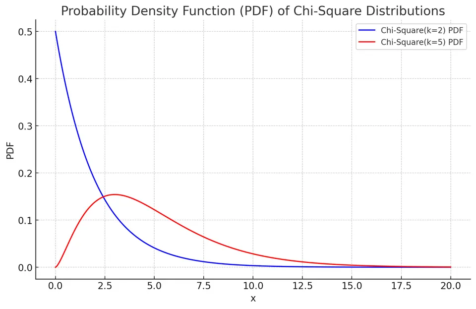
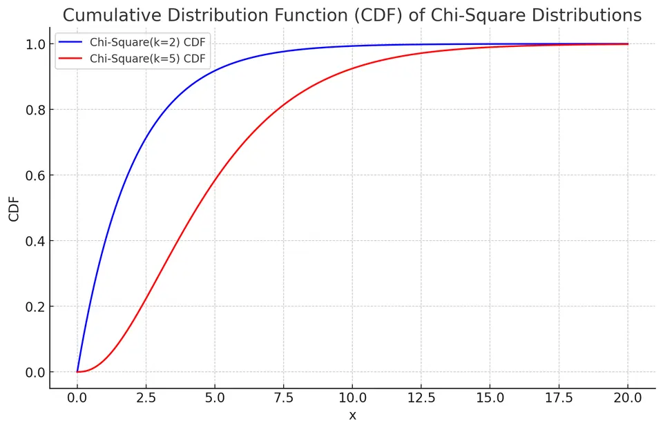

Chi-Square Distribution
A chi-square distribution is a continuous probability distribution of the sum of the squares of k independent standard normal random variables. The chi-square distribution is denoted as $X \sim \chi^2(k)$, where k is the number of degrees of freedom.
If $Z_1,\ldots,Z_k$ are independent standard normal variables, then $Q=\sum_{j=1}^kZ_j^2$ has a chi-square distribution with $k$ degrees of freedom. Squaring makes every contribution nonnegative. Since $E[Z_j^2]=1$ and $\mathrm{Var}(Z_j^2)=2$, independence gives $E[Q]=k$ and $\mathrm{Var}(Q)=2k$.
The density formula extends to every positive real degrees-of-freedom value, even though the literal finite sum construction uses integer $k$. In gamma shape/rate notation, $\chi^2(k)$ is Gamma$(k/2,1/2)$. This connection explains the gamma functions in the density and the MGF.
Degrees of Freedom Count Independent Normal Directions
If the population mean $\mu$ and variance $\sigma^2$ are known, standardizing n independent normal observations gives
$$ \sum_{i=1}^n\frac{(X_i-\mu)^2}{\sigma^2}\sim\chi^2(n). $$
If the center is estimated from those same observations, the residuals satisfy $\sum_i(X_i-\bar X)=0$. One cannot choose all n residuals independently. The residual vector lies in an $(n-1)$-dimensional subspace perpendicular to the vector of ones.
To make the distributional argument explicit, rotate the standardized normal vector using an orthogonal coordinate system whose first direction is $\mathbf1/\sqrt n$. Orthogonal rotation preserves the independent standard normal law. The first coordinate becomes $\sqrt n(\bar X-\mu)/\sigma$; the remaining $n-1$ coordinates describe the residuals. Therefore
$$ \sum_i\frac{(X_i-\mu)^2}{\sigma^2} =\frac{n(\bar X-\mu)^2}{\sigma^2} +\frac{\sum_i(X_i-\bar X)^2}{\sigma^2}, $$
where the two right-hand terms are independent chi-square variables with one and $n-1$ degrees of freedom. This simultaneously establishes the residual chi-square law and independence of $\bar X$ and $S^2$ under normal sampling.
Residuals are not independent in their original coordinates. The independent quantities are their coordinates in a suitable orthonormal basis. For data 2, 4, and 6, the residuals $-2,0,2$ sum to zero and their squared sum is eight. Dividing by $n-1=2$ gives $S^2=4$. If the underlying normal variance were four, this realized chi-square statistic would be $8/4=2$, with two degrees of freedom.
The same geometry extends to normal linear regression with independent errors of common variance $\sigma^2$. A fixed full-rank design with p fitted coefficients projects onto p mean directions, leaving $n-p$ residual directions. The ordinary residual sum of squares divided by $\sigma^2$ is then $\chi^2(n-p)$. For correlated errors, an analogous construction must use the appropriate covariance weighting and projection; a raw squared residual sum does not generally have this law.
Probability Density Function (PDF)
The PDF of a chi-square distribution is given by:
$$f(x) = \begin{cases} \frac{1}{2^{k/2} \Gamma \left(\frac{k}{2}\right)} x^{\frac{k}{2} - 1} e^{-\frac{x}{2}}, & \text{if}\ x > 0 \\ 0, & \text{if}\ x < 0 \end{cases} $$
where $\Gamma(\cdot)$ is the gamma function.

Cumulative Distribution Function (CDF)
The CDF of a chi-square distribution is given by:
$$F(x) = \frac{\gamma \left(\frac{k}{2}, \frac{x}{2}\right)}{\Gamma\left(\frac{k}{2}\right)}$$
where $\gamma(\cdot)$ is the lower incomplete gamma function and $\Gamma(\cdot)$ is the gamma function.
The displayed CDF applies for $x\geq0$; for $x<0$, it is zero. The density formula is interpreted on $x>0$, with its boundary value at zero taken by a limit when necessary. For $k<2$ the density diverges there, but probabilities remain finite because a density's value at one point is not a point mass.

Expected Value and Variance
The expected value (mean) of a chi-square distribution is equal to the number of degrees of freedom:
$$E[X] = k$$
The variance of a chi-square distribution is given by:
$$\text{Var}(X) = 2k$$
In normal sampling, if $X_1,\ldots,X_n$ are i.i.d. $N(\mu,\sigma^2)$ and $S^2$ is the sample variance, then $(n-1)S^2/\sigma^2\sim\chi^2(n-1)$. This is the link to confidence intervals for a variance.
Estimating the mean imposes the constraint $\sum_i(X_i-\bar X)=0$, leaving $n-1$ independent normal directions in the residual vector. Their squared standardized lengths produce the chi-square statistic. If $q_p$ denotes the $p$ quantile of $\chi^2(n-1)$, inversion gives the variance interval
The larger quantile is in the lower endpoint's denominator. Reversing those denominators would reverse the interval bounds. Exact coverage here depends on normal observations.
A Complete Confidence Interval for a Normal Population Variance
Suppose ten independent normal measurements give $S^2=4$. There are nine residual degrees of freedom, and the observed numerator is $(n-1)S^2=36$. The 2.5% and 97.5% chi-square quantiles are approximately 2.7004 and 19.0228. The 95% variance interval is
$$ \left(\frac{36}{19.0228},\frac{36}{2.7004}\right) \approx(1.8925,13.3314). $$
Taking square roots gives the corresponding interval for the population standard deviation, approximately $(1.3757,3.6512)$. The endpoints for variance have squared measurement units; the standard-deviation endpoints have the original units.
To see why the interval is asymmetric, start with $P(q_{.025}\leq9S^2/\sigma^2\leq q_{.975})=0.95$ and solve the inequalities for the positive $\sigma^2$. Larger chi-square quantiles give smaller endpoints after inversion. A symmetric estimate-plus-or-minus margin would not reproduce this exact inversion.
The width is also informative. Under normal sampling,
$$ \frac{\sqrt{\mathrm{Var}(S^2)}}{E[S^2]} =\sqrt{\frac{2}{n-1}}. $$
For ten observations, the relative standard deviation of $S^2$ is about 47.1%. A variance estimate can therefore be quite imprecise even when its reported value looks simple. These statements are exact under the normal model; the chi-square law is sensitive to how nonnormal observations change squared residuals.
Moment Generating Functions and Moments
The moment generating function (MGF) of a chi-square distribution, defined for $t<1/2$, is:
$$M_X(t) = E[e^{tX}] = (1-2t)^{-\frac{k}{2}}$$
To find the n-th moment, we take the n-th derivative of the MGF with respect to t and then evaluate it at t=0:
$$E[X^n] = \frac{d^n M_X(t)}{dt^n}\Bigg|_{t=0}$$
- First Moment (Mean):
$$E[X] = k$$
- Second Moment ($\text{Var}(X) + (E[X])^2 = 2k + k^2$):
$$E[X^2] = k^2 + 2k$$
Deriving the MGF and General Moments
For one standard normal Z,
$$ E[e^{tZ^2}] =\frac1{\sqrt{2\pi}}\int_{-\infty}^{\infty} e^{-(1-2t)z^2/2}\,dz =(1-2t)^{-1/2},\qquad t<\frac12. $$
The integral is finite precisely when the quadratic exponent decays. Multiplying the MGFs of k independent squared normals yields $(1-2t)^{-k/2}$. Independent chi-square variables consequently add their degrees of freedom: if $U\sim\chi^2(a)$ and $V\sim\chi^2(b)$ are independent, then $U+V\sim\chi^2(a+b)$.
Integration of the gamma-form density gives the more general identity
$$ E[Q^r] =2^r\frac{\Gamma(k/2+r)}{\Gamma(k/2)}, \qquad r>-\frac k2. $$
At $r=1$ this gives k, and at $r=2$ it gives $k(k+2)$, leaving variance $2k$. The distribution's skewness is $\sqrt{8/k}$. For small degrees of freedom the density is strongly asymmetric; as k grows, $(Q-k)/\sqrt{2k}$ approaches a standard normal distribution. This latter approximation follows from applying a CLT to the independent squared-normal contributions for integer k.
The density and moment formulas also define positive noninteger degrees of freedom through the gamma family. The NIST chi-square reference gives the density, cumulative distribution, and basic shape quantities.
Example: Goodness-of-Fit Test for a Fair Die
A researcher is testing the fairness of a six-sided die. The die is rolled 60 times, resulting in the following observed frequencies for each face:
| Face of the Die | Observed Frequency |
|---|---|
| 1 | 8 |
| 2 | 9 |
| 3 | 13 |
| 4 | 7 |
| 5 | 12 |
| 6 | 11 |
To determine if the die is fair, the researcher employs a chi-square goodness-of-fit test.
Given:
The expected frequency for each face (assuming the die is fair): E = Total rolls / Number of faces = 60 / 6 = 10
The chi-square formula:
$$ \chi^2 = \sum \frac{(O_i - E)^2}{E} $$
where $O_i$ is the observed frequency and $E$ is the expected frequency.
I. Calculate the chi-square statistic:
$$ \chi^2 = \frac{(8-10)^2}{10} + \frac{(9-10)^2}{10} + \frac{(13-10)^2}{10} + \frac{(7-10)^2}{10} + \frac{(12-10)^2}{10} + \frac{(11-10)^2}{10} = \frac{4+1+9+9+4+1}{10} = 2.8 $$
II. Determine the degrees of freedom:
Degrees of freedom for chi-square test: Number of categories - 1 = 6 - 1 = 5
III. Decide:
The 5% critical value of $\chi^2(5)$ is $11.07$ and the p-value is $P(\chi^2(5)\ge 2.8)\approx 0.73$. Since $2.8<11.07$, there is no evidence that the die is unfair.
Each term compares a squared count discrepancy with its null expected count, so departures in either direction increase the statistic. The six count deviations sum to zero, leaving five degrees of freedom because the six null face probabilities were specified rather than estimated. Unlike the normal-sample variance statistic, this goodness-of-fit statistic has a chi-square reference distribution only asymptotically. With expected counts of ten and independent rolls, the approximation is reasonable. Failing to reject does not prove exact fairness; it means these 60 rolls do not provide strong evidence against the specified model.
Why the Categorical Reference Is Only Asymptotic
For m categories with fixed null probabilities $p_1,\ldots,p_m$, the count vector is multinomial with total N. Define standardized discrepancies $R_i=(O_i-Np_i)/\sqrt{Np_i}$. The counts are dependent because their total is fixed, and
$$ \mathrm{Cov}(R_i,R_j) = \begin{cases} 1-p_i,&i=j,\\ -\sqrt{p_ip_j},&i\ne j. \end{cases} $$
In matrix form this covariance is $I-vv^\top$, where $v=(\sqrt{p_1},\ldots,\sqrt{p_m})^\top$ has length one. It projects onto an $(m-1)$-dimensional subspace. As N grows with fixed positive category probabilities, a multivariate CLT makes the discrepancy vector approximately normal in that subspace. Its squared length $\sum_iR_i^2$ then approaches $\chi^2(m-1)$.
This explains the degrees of freedom without pretending that the individual squared count terms are independent chi-square variables. For the die, m is six and the probabilities were specified, giving five degrees of freedom. When r parameters are fitted in a regular, compatible model, a common reference uses $m-1-r$ degrees of freedom; parameter fitting, binning, and identifiability must justify that adjustment.
For fixed null probabilities, the trace of the discrepancy covariance also gives $E[\sum_iR_i^2]=m-1$ exactly, even at finite N. Matching that mean to a chi-square mean does not establish the full reference distribution. The approximation concerns the joint shape of the discrepancies, not just their expected squared length.
Sparse expected counts can make the continuous approximation poor. A null simulation can instead generate full multinomial count vectors, retaining the same total and probabilities, and compare their statistics with the observed one. If fitting is part of the tested procedure, reproduce that fitting. Independently simulating each count would remove the fixed-total constraint and change the null experiment.
Independence in a Contingency Table
Consider a two-by-two table of counts:
| Group | Outcome present | Outcome absent | Total |
|---|---|---|---|
| A | 30 | 20 | 50 |
| B | 10 | 40 | 50 |
| Total | 40 | 60 | 100 |
Under an independence model with probabilities estimated from the margins, the expected counts are 20 and 30 in each row. Pearson's statistic is
$$ \frac{(30-20)^2}{20}+\frac{(20-30)^2}{30} +\frac{(10-20)^2}{20}+\frac{(40-30)^2}{30} =16.6667. $$
For a table with r rows and c columns, the independence-model reference has $(r-1)(c-1)$ degrees of freedom. Here it is one, giving an approximate upper-tail p-value $0.0000446$ without a continuity correction. The departures indicate association under the sampling model, rather than identifying a cause.
There are three freely varying cell probabilities after fixing the total, while the two-by-two independence model estimates two marginal probabilities. Their difference leaves one degree of freedom. The exact null experiment can differ if both margins are fixed by design; a conditional table test should reflect those constraints. The normal-sample variance result and this categorical approximation share a reference family but arise from different constructions.
Applications
Chi-square distributions are widely used in hypothesis testing (such as the chi-square test for independence), goodness-of-fit tests, and confidence interval estimation for the population variance in normally distributed data.